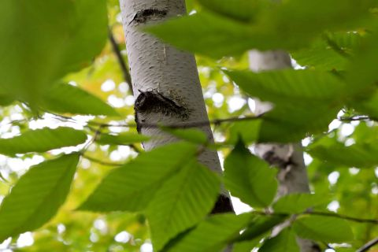
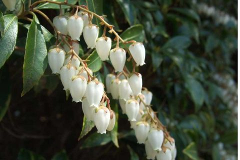
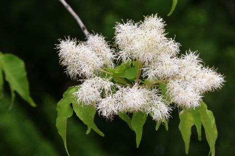
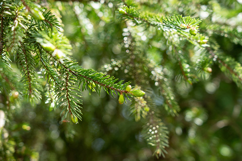

DESIGN
SCROLL
グランクラスの名にふさわしい
誇り高きデザイン。
洗練された日常を象徴するように、ランダムに配した外壁の水平ラインと
シックなカラーリングが印象的な外観デザイン。
南西角のコーナーサッシやガラス手すりのバルコニーなどが
都心でありながら澄み渡る開放感を演出します。
外観完成予想図
設計・デザイン監修
株式会社デザインショップ・アーキテクツ
篠原 崇明
凛とした端正な都心らしいファサードデザイン。
南西角を袖壁とコーナーサッシでシンプルに構成し、札幌駅に向かって邸宅の顔となるデザインを施しました。このコーナー部分を起点として創成川通沿いのバルコニー面を様々なプロポーションのグリッドでデザイン。モノトーンのスラブライン、ガラス手すりの水平ラインなどを縦横に描くことで繊細かつ大胆な外観デザインとなっています。
潤いに抱かれ、
都心に磨かれる新たな景観を。
日々、住まう人々を迎えるエントランスアプローチは
都心らしい洗練さを備えながら樹々や川面の潤いに映える
この地ならではのデザインを採用しています。
エントランスアプローチ完成予想図
創成川通の樹々と連なる、
都心のオアシスとして。
敷地全体を植栽で囲み、創成川通と連なる緑のシークエンスが
都心のオアシスを彷彿させるランドプランを構築。
さらにエントランスホールに中庭をレイアウトし、
日常のなかで表情豊かな四季の移ろいを感じていただけます。
ランドプランイメージイラスト
- エントランスホール／中庭
住まう方同士が木々や花々を眺めながら憩い、語らうことができるスペース。
- 敷地内駐車場
34台分の敷地内駐車場をご用意。車路や駐車スペースなどにロードヒーティングを敷設しています。
- バイク置場
2台分のバイク置場を建物内に設けました。
- 屋内駐輪場
雨や雪などから自転車を守る66台分の自転車置場を敷地内に設けました。
- ゴミ置場
外出ついでや深夜など、24時間ゴミ出しが可能。住まいにゴミを置いておく必要がありません。
- ペットサニタリー
お散歩帰り清潔にできるペット足洗い場があるペットサニタリーを設けています。
外構植栽計画
株式会社いろ葉Design
大武 一伯
都心の日常に、自然のやすらぎをもたらす植栽計画。
札幌駅前であり、創成川通に面した立地を配慮した外構を計画しました。敷地外周部に連続して植栽を配し、都心のマンションとしての領域感を演出。同時に、これらの植栽は街並に季節感や自然感をもたらすことでしょう。エントランスからマンション内へ足を踏み入れると、目の前に中庭が広がるようレイアウト。木立のなかにアクセントとなる石壁を配し、奥行きのある独自の世界観を味わっていただけます。また、この中庭は散策できるよう飛石風の小道を設けており、住まう方々に木漏れ日や、風に揺らぐ葉の音などを感じて愉しんでいただけるよう計画しました。
-
ヤマボウシ
-

シラカバ
-
シャクナゲ
-

アセビ
-
ニシキギ
-
イロハモミジ
-

アオダモ
-

アカエゾマツ
植栽の一例 参考写真
暮らしのそばで
春夏秋冬を味わう贅沢。
都心ライフを謳歌し、北海道らしい四季が堪能できるよう
エントランスホールから出入りができる中庭をご用意しました。
まばゆい新緑、陽光に映える深緑、彩り豊かな紅葉、静謐な白銀…
季節とともに移りゆく美しい風景が日常のものとなります。
エントランスホール完成予想図


※掲載の完成予想図は全て、設計段階の図面を基に描き起こしたもので、形状・色等は実際とは異なる場合があります。形状の細部、設備機器等は表現していません。表現されている植栽は設計段階のものであり、変更になる場合があります。また葉の色合いや枝ぶりや樹形は想定であり、竣工から生育期間を経た状態のものを描いています。また特定の季節状態を示すものではありません。敷地周辺の建物などについては省略しています。
※掲載のランドプランイメージイラストは、設計段階の図面を基に描き起こしたもので、形状・色等は実際とは異なる場合があります。また、形状の細部、設備機器等は表現していません。表現されている植栽は設計段階のものであり、変更になる場合があります。また葉の色合いや枝ぶりや樹形は想定であり、竣工から生育期間を経た状態のものを描いています。また特定の季節状態を示すものではありません。敷地周辺の建物などについては省略しています。を示すものではありません。敷地周辺の建物などについては省略しています。